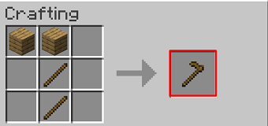

Les houes dans minecraft
Les différents types de houes dans minecraft
- Houes en bois
- Houes en pierre
- Houes en fer
- Houes en or
- Houes en diamant
- Houes en netherite
La houe (nom anglais : hoe) est un outil servant à labourer la terre et les blocs d'herbe pour les changer en terre labourée, ainsi qu'à récolter plus rapidement certains blocs.
La recette de construction d'une houe dans Minecraft est assez similaire a celle de la pioche, la différence étant qu'a la place de mettre 3 matériaux, on en met que 2.
Quoi que vous en puissiez dire, mon cher abbé, répliquait M. de Rênal, je n’exposerai pas l’administration de Verrières à recevoir un affront de M. de La Mole. Vous ne le connaissez pas, il pense bien à la cour ; mais ici, en province, c’est un mauvais plaisant satirique, moqueur, ne cherchant qu’à embarrasser les gens. Il est capable, uniquement pour s’amuser, de nous couvrir de ridicule aux yeux des libéraux.